操作系统-12虚拟化-内存管理(续)
交换
如果没有⾜够的空间来容纳所有进程怎么办？
- ⼀个进程可以被暂时换出内存到后备存储
- 然后在需要继续执⾏时再换回内存
- 进程的总物理内存空间可以超过物理内存
交换时间的主要部分是磁盘传输时间（与交换的内存量直接成正⽐）。
- 系统维护⼀个就绪队列，⾥⾯是内存镜像在磁盘上的准备运⾏的进程。
- 如果要放到 CPU 上的下⼀个进程不在内存中，需要换出⼀个进程并换⼊⽬标进程, 这时上下⽂切换时间可能会⾮常⾼。
- ⽐如⼀个 100MB 的进程交换到传输速率为 50MB/秒的硬盘上，那么交换出（或交换 ⼊）时间 = 2 秒
- 如果进程正在等待 I/O 操作（I/O 缓冲区在进程的地址空间中）？
- 交换会产⽣负⾯影响（I/O 失败或数据丢失）！⼀般涉及 I/O 操作的⻚需要被锁定在内存中，防⽌在操作完成前被换出。
标准交换在现代操作系统中不再使⽤，但变异版本很常⻅（例如，Linux 和 Windows）。
- 交换通常是禁⽤的。
- 当分配的内存超过阈值（当可⽤内存极低时）才会启动交换。
- ⼀旦内存需求减少到低于阈值时，交换再次被禁⽤。
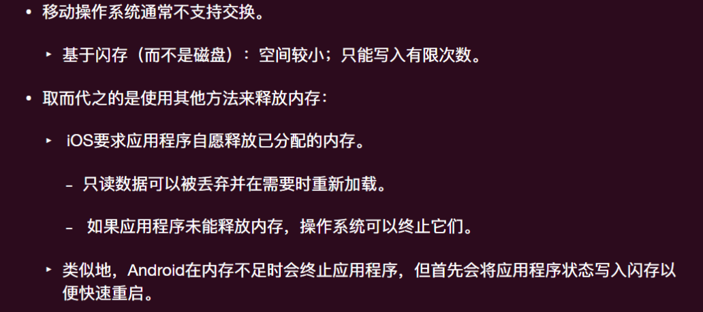
如果单个进程本身超过物理内存？
- 计算机可以运⾏⾮常⼤的单个程序
- 远远⼤于物理内存
- 只要“活跃”的占⽤内存量适合物理内存，就可以运行
- 然⽽交换⽆法做到这⼀点
- ⼀个想法：不是所有内容都需要同时加载进内存！
部分内存驻留
- 程序中的错误处理代码不会在每次运⾏时都被使⽤
- 因此不需要它在整个持续时间内占⽤内存
- 数组可能分配得⽐所需要的⼤
int players[MAX_INTEGER];
- 程序地快速启动
- ⽆需在运⾏之前加载整个程序
虚拟内存
每个进程都有⼀个⼤地址空间的幻觉。
⽀持多个并发运⾏的进程使⽤⼤虚拟地址空间：只将常⽤的⻚⾯保留在内存中 （此时内存可以看成是所有 pages 的⼀个 cache）
具备“部分”加载程序的执⾏能⼒
- 程序不再受物理内存限制（可以运⾏⽆法完全放⼊物理内存的程序）
- 每个程序在运⾏时占⽤更少的内存（可以同时运⾏更多的程序）
- 加载或交换程序到内存中所需的 I/O 更少（每个程序启动更快）
⽤存在/不存在位（在⻚表项中）来跟踪哪些⻚⾯存在于物理内存中。
- 当程序引⽤其地址空间的⼀部分时：
- 如果⻚⾯在物理内存中，则直接进⾏地址转换
- 如果不在，则发⽣缺⻚异常（Page Fault），操作系统被调⽤来处理该异常：
- 检测并将⻚⾯加载到内存中，然后重新执⾏指令 (引⽤该地址空间的指令)
缺页异常
- CPU 控制流传递
- 提前注册缺⻚异常处理函数
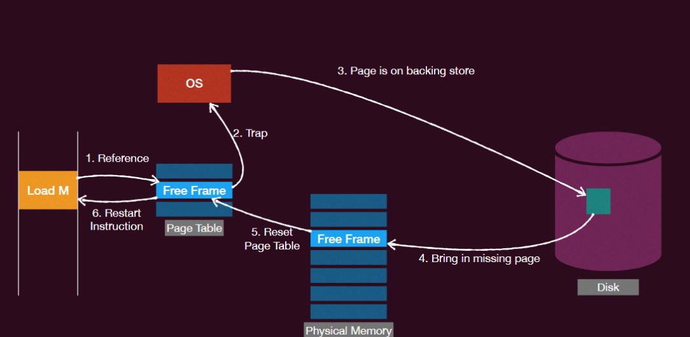
具体流程
- 硬件陷⼊内核，进⾏ Context-Switch（将程序计数器保存在栈上，保存通⽤寄存器和其他易失性信息。）
- 系统发现了这个事件是⼀个缺⻚异常，尝试确定所需的虚拟⻚⾯。
- ⼀旦知道引发缺⻚异常的虚拟地址，系统检查地址是否有效，并且保护是否与访问⼀致。
- 找到⼀个空闲（⼲净的）帧。
- 如果没有空闲帧，则运⾏⻚⾯置换以选择⼀个 victim (受害者)。
- 如果所选帧是脏的，则将⻚⾯安排转移到磁盘，进⾏上下⽂切换，暂停引发异常的进程。
- ⼀旦帧变为⼲净状态，系统查找所需⻚⾯的磁盘地址，并安排磁盘操作将其调⼊（引发缺⻚异常的进程仍处于暂停状态）
- 当磁盘中断指示⻚⾯已经到达时，更新⻚表，并将帧标记为正常状态
- 将引发缺⻚异常的指令恢复到其原始状态，并重置程序计数器
- 引发缺⻚异常的进程被调度，Context-Switch 回去
性能：
- 处理缺⻚异常的三个主要活动：
- 服务中断：⼀般只需要⼏百条指令
- 读取⻚⾯：需要⼤量时间
- 恢复进程：需要少量时间
- 缺⻚错误率 ：进程在内存中发现缺⻚异常的速率。
- 有效访问时间（Effective Access Time, EAT）:(1 − p) × 访存时间 + p × 缺⻚异常开销
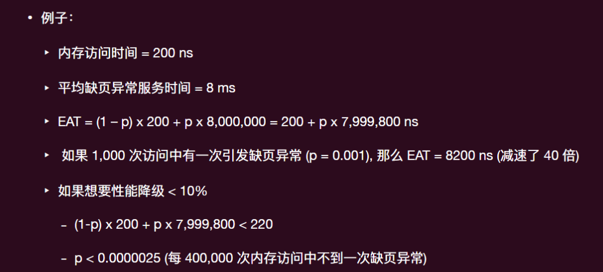
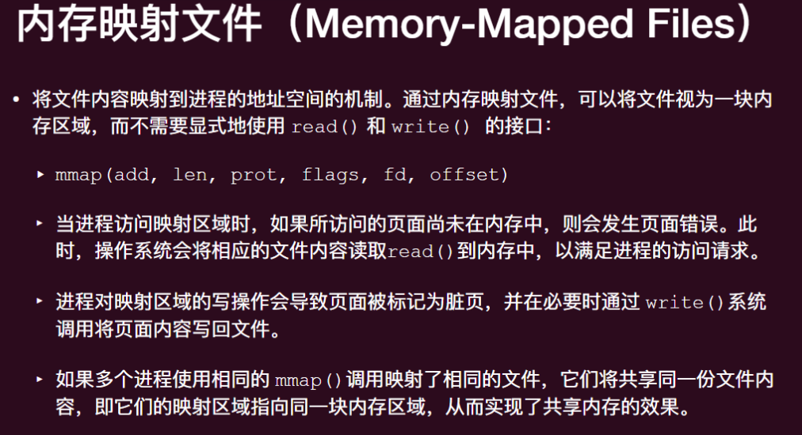
页面置换
何时将页面调入内存
- 按需分⻚（Demand Paging） - 出现缺⻚异常后进⾏调入⻚⾯
- 最简单的⽅法
- 为了提⾼效率，调入是异步进⾏的：
- 中断处理程序应快速响应 - 只需启动磁盘 I/O 并阻塞该进程，让其他进程运⾏。
- 预取 (Prefetching)
- 猜测即将使⽤哪些⻚⾯，因此提前将其调⼊内存
- 往往是基于历史的缺⻚记录来预测
如果没有空闲的帧会发生什么
- ⻚⾯置换：找到内存中的⼀个⻚⾯，但实际上并未使⽤，将其换出。
- 选择⼀个受害者帧（victim frame）进⾏驱逐。
- 将所需的⻚⾯调⼊（新）空闲帧。
当一个页面必须被换出时
- 更新⻚表：找到所有引⽤旧⻚⾯的⻚表项（因为帧可以共享），并将每个设置为不可⻅
- 移除任何 TLB 条⽬
- TLB 关机：在多处理器系统中，必须从所有处理器的 TLB 中消除 TLB 条⽬
- 将⻚⾯写回磁盘（如果需要，⻚表项中的脏位）
- 重新启动引发陷阱的指令：（需要备份指令）
如果不想将某些页面换出
- 将⻚⾯固定到内存中以锁定
- 有时必须将⻚⾯锁定到内存中
- 总是将（部分）内核⻚⾯放⼊物理内存中
- ⽤于从设备复制⽂件的⻚⾯必须锁定，以防⽌被选择⽤于驱逐（I/O）
- ⼀个低优先级的进程交换⼊⼀个⻚⾯，然后⼀个⾼优先级的进程抢占并请求⼀个新的帧？
- 需要小心使用
页面 buffering
- 操作系统会等到内存完全满了吗？
- 保留⼀组空闲帧（Buffering）以确保在需要时总有可⽤的帧在合适的时候
- 此外有⼀个交换⻚⾯的守护进程（后台进程）定期运⾏（类似于调度程序）
- 如果空闲物理帧的数量 < “低⽔位标记”，则换出⼀些⻚⾯，直到数量达到"⾼⽔位标记"
- 系统会⼀次性换出许多⻚⾯，以从低⽔平达到⾼⽔平。
- 这样做是因为将⼤块数据写⼊磁盘更有效（批量传输）
- 需要维护⼀个修改⻚⾯的列表，将⻚⾯写⼊其中并设置为⾮脏（Linux 中的 pdflush）
⻚⾯交换的守护进程可以以低优先级调度
- 利⽤空闲时间准备未来的⼯作
Linux 交换守护进程是⼀个名为 kswapd 的进程
页面置换策略
哪个帧应该被替换？
⽬标是实现最低的缺⻚异常率（尽量减少从磁盘获取⻚⾯的次数）。
- 如果选择⼀个不常被使⽤的⻚⾯，系统性能会更好。
- 如果删除⼀个频繁使⽤的⻚⾯，它可能很快就需要被重新调⼊。
First In First Out FIFO
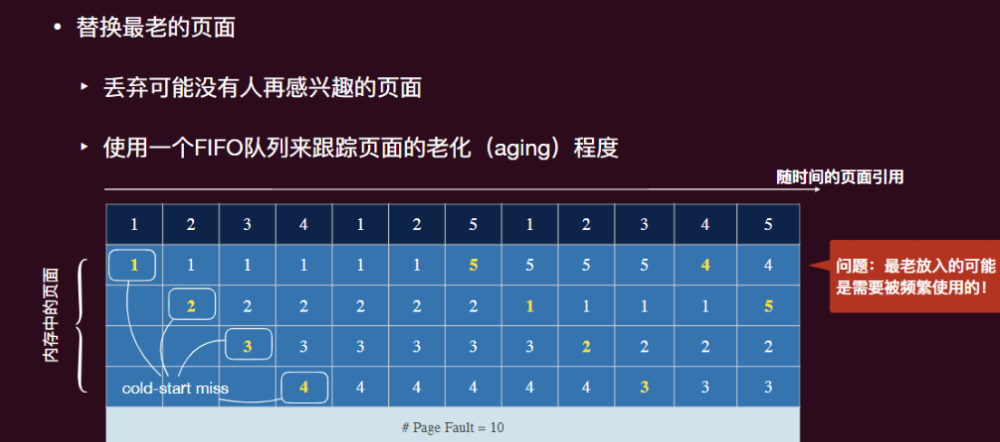
Belady 异常：增加帧数反⽽可能会降低命中率（帧数越少，缺⻚异常越少）
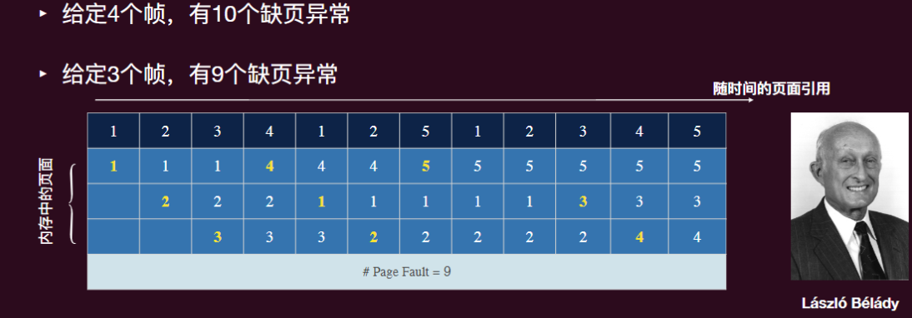
Belady’s Anomaly 会发⽣在任何⻚⾯替换算法中（⽐如随机替换），只要它不遵循“栈算法”属性（stack algorithm property）。
- 之后的 LRU（最近最少使⽤）和 Optimal（最佳）算法始终遵循栈算法属性，因此它们永远不会受到 Belady’s Anomaly 的影响。
栈算法属性确保当⻚⾯帧数量增加时，先前存在的⻚⾯集合始终是当⻚⾯帧更多时存在的⻚⾯集合的⼦集。换句话说，随着⻚⾯帧数的增加，先前存在的⻚ ⾯应始终保留在内存中。
- 如果没有这个性质，则可能会导致先前存在于内存中但由于增加⻚⾯数反⽽ 被删除这个⻚⾯，如果正好这个⻚⾯是⼀个需要频繁使⽤的⻚⾯，那么…
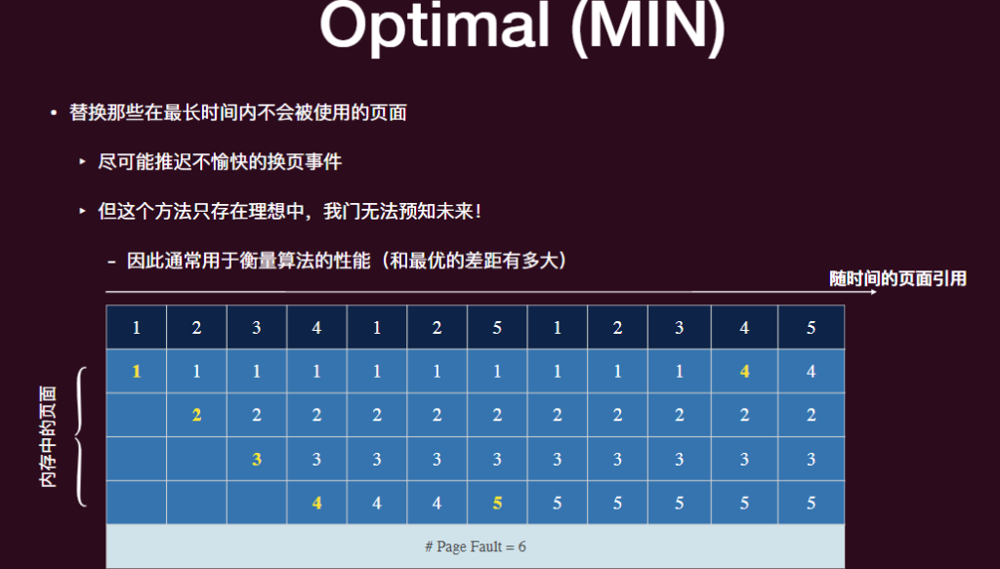
Least Recently Used LRU
替换那些在最⻓时间内没有被使⽤的⻚⾯
- 使⽤历史⽽不是未来：很⻓时间没有被使⽤的⻚⾯可能会保持⻓时间未使⽤
- 基于局部性原理
为了跟踪哪些⻚⾯最近最少被使⽤（将每个⻚⾯的最后⼀次使⽤时间与之关联），操作系统必须在每次内存引⽤时进⾏⼀些计时⼯作。
计数器实现
- 每个⻚⾯都有⼀个对应的计数器项。
- 每次⻚⾯被引⽤时，通过硬件将时钟寄存器的值复制到计数器中。
- 当需要更换⻚⾯时，查看计数器以找到最⼩的值
->开销太大
近似 LRU
通过引⽤位来近似 LRU（即⼆次机会算法，Second Chance）：寻找⼀个在最近的时钟周期内没有被引⽤的⽼⻚⾯。
- 系统中每个⻚⾯有⼀个引⽤位（R）。
- 每当引⽤⻚⾯（即读取或写⼊），引⽤位被设置为 1（由硬件完成）。
- 如果要被替换的⻚⾯：
- R = 1：将引⽤位设置为 0；将其放在 FIFO 队列的末尾；并检查下⼀个⻚⾯。
- R = 0：替换它。
- 如果所有⻚⾯都被引⽤，那么第⼆次机会等于 FIFO。
二次机会算法
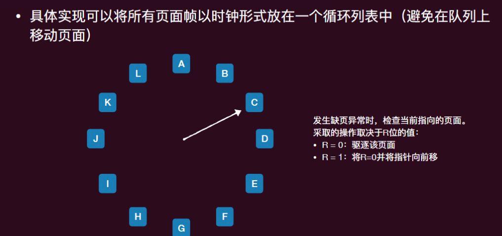
Not Recently Used NRU 算法
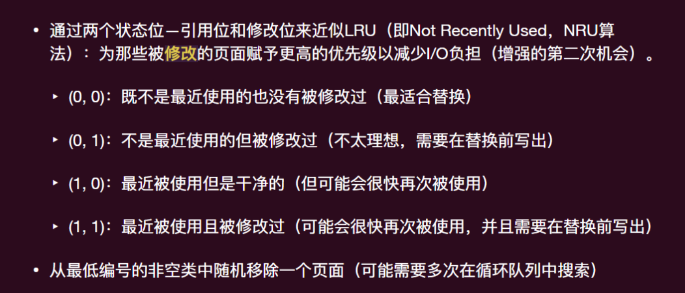
抖动
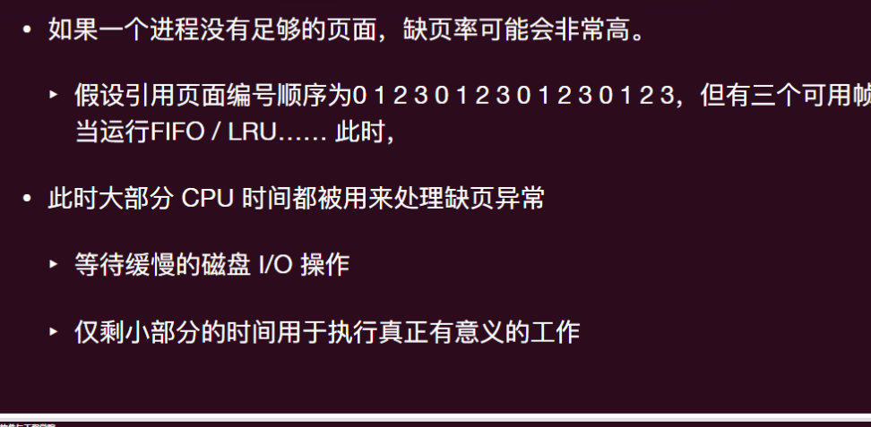
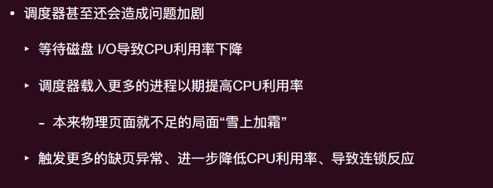
抖动（也叫颠簸）：⼀个进程花费所有时间在⻚⾯间进⾏交换（⼤多数引⽤ 导致缺⻚异常）
局部性原理
- 时间局部性（Temporal locality）：相同的内存位置在不久的将来会再次被访问。
- 空间局部性（Spatial locality）：未来将会访问附近的内存位置。
- 当⼀个进程执⾏时，它会从⼀个局部转移到另⼀个局部
工具集 Working Set 模型
⼯作集（Working Set）：
- 其在时间段 (t-x, t) 内使⽤的内存⻚集合也被视为其在未来 (下⼀个 x 时间内) 会访问的⻚集
- 如果整个⼯作集都在内存中，那么进程将运⾏⽽不会引起太多缺⻚异常，直到它进⼊另⼀个执⾏阶段。
- 如果可⽤内存太⼩，⽆法容纳整个⼯作集，则会发⽣抖动。
All-or-nothing 模型
- 进程⼯作集要不都在内存中，否则全都换出
- 需要跟踪每个进程的⼯作集，并确保在运⾏之前将其加载到内存中。
- ⼤⼤降低缺⻚异常率
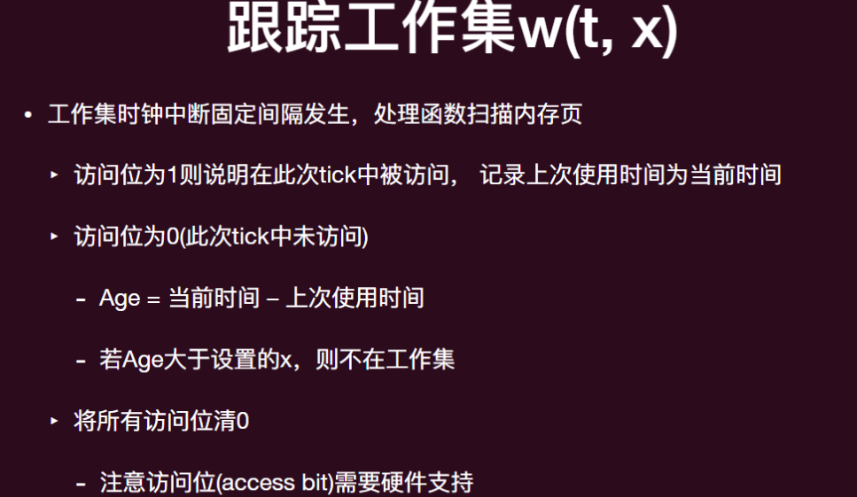
本地和全局策略
替换页帧是从全局（所有进程中）还是本地（只挑自己的页帧）？
本地⻚⾯置换：每个进程从其分配的帧集中选择受害者
- 每个进程的帧数固定分配
- 每个进程的性能更加⼀致
- 但可能导致内存利⽤不⾜
全局⻚⾯置换：从分配给任何进程的帧中选择受害者
- 每个进程的帧数可变
- 吞吐量更⼤，因此更为普遍
帧分配
采⽤全局⻚⾯置换时，操作系统必须不断决定为每个进程分配的⻚⾯帧数：
- 平均分配：为每个进程分配相等的份额。
- ⽐例分配：根据进程⼤⼩进⾏分配（需要为每个进程分配⼀定数量的帧）。
- 按照优先级分配（优先级⾼的）
这些静态的帧数分配⽆法解决不断变化的动态需求
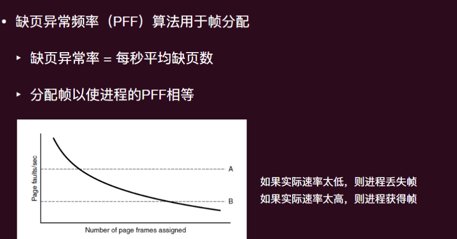
Put it all together
操作系统对分页的支持
- 进程创建
- 确定程序和数据的⼤⼩并创建⻚表
- 为⻚表分配空间并初始化
- 为磁盘上的交换区域分配空间并初始化
- 在进程表中记录有关⻚表和交换空间的信息
- 进程执行
- 为新进程重置内存管理单元（⻚表基址寄存器）
- 上下⽂切换：清除 TLB（除⾮它是带有标记的）
- 可选地，将进程的⼀些或所有⻚⾯调⼊
- ⻚⾯守护进程（Page Daemon）
- ⼤部分时间处于休眠状态，但定期唤醒以检查内存状态，并主动准备待驱逐的⻚⾯
- 缺⻚异常
- 找到所需的⻚，并在磁盘上定位该⻚
- 找到⼀个可⽤的物理⻚帧来放置新⻚帧（必要时替换旧⻚帧）
- 将所需的⻚⾯读⼊该物理⻚帧
- 备份程序计数器以再次执⾏指令
- 进程终⽌
- 释放⻚表、⻚帧和交换空间
- 共享⻚帧只能在使⽤它们的最后⼀个进程终⽌时释放
程序优化
- 局部性取决于数据结构
- 数字鼓励顺序访问
- 多次引用同一页
- 可预测的访问下一个页面
- 数字鼓励顺序访问
- 编译器和链接器也能帮忙
- 不要把一个函数分散到两页上
总结
内存的抽象
- 屏蔽物理的局限（无线空间、连续、独享）
实现机制：地址翻译
- 需要硬件和 OS 配合
底层内存的管理：连续分配、分段、分页
- 利用 TLB 缓存
实现虚拟内存的工程问题
- 换页、工具集